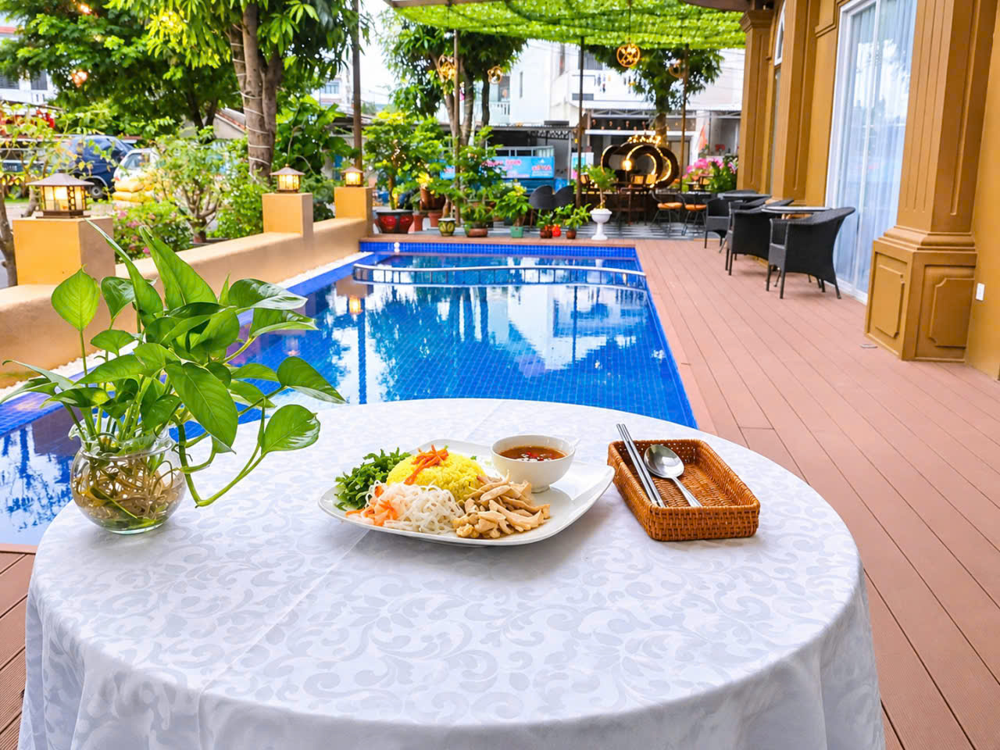

Tiếng Việt
Tiếng Việt English
English 한국어
한국어 中文
中文 Русский
Русский Deutsch
Deutsch
Người ta thường nói, muốn hiểu một vùng đất thì hãy bắt đầu từ bữa ăn. Hội An là minh chứng rõ nhất cho câu nói ấy. Từng là thương cảng sầm uất với thương nhân Nhật Bản, Trung Hoa và châu Âu qua lại, Hội An giữ lại trong ẩm thực của mình những lớp giao thoa văn hóa kéo dài hàng trăm năm. Bài viết này giới thiệu mười món ngon bạn nên thử, cách thưởng thức chúng đúng điệu, và những trải nghiệm ăn uống ngay trong khuôn viên CGP Luxury Hotel.
Điều gì làm ẩm thực Hội An đặc biệt?
Ẩm thực Hội An không cầu kỳ, nhưng tinh tế đến từng chi tiết. Ba yếu tố tạo nên hương vị riêng của nơi đây là nguyên liệu địa phương, sự giao thoa văn hóa và cách ăn kèm rau sống.
Rau Trà Quế
Rau thơm từ làng Trà Quế được trồng bằng rong rêu đầm, có mùi thơm nồng và vị ngọt rất riêng. Hầu như món nào ở Hội An cũng có rau sống ăn kèm.
Giao thoa văn hóa
Sợi mì cao lầu, bánh bao bánh vạc hay hoành thánh đều mang dấu ấn của thương nhân nước ngoài từng sinh sống ở thương cảng xưa.
Công thức gia truyền
Nhiều quán ăn nổi tiếng giữ công thức qua nhiều thế hệ, nấu theo cách cũ và chỉ bán vào một khung giờ nhất định.
Giá cả dễ chịu
Phần lớn món ăn đường phố có giá rất phải chăng, phù hợp để bạn thử nhiều món trong một ngày.
10 món ngon nên thử
1. Cao lầu
Nếu chỉ được thử một món ở Hội An, hãy chọn cao lầu. Sợi mì màu vàng nâu, dai và hơi giòn, được làm theo cách truyền thống với nước giếng và tro củi. Một tô cao lầu gồm mì, thịt xíu thái mỏng, tóp mỡ chiên giòn, giá trụng, rau sống Trà Quế và một chút nước sốt đậm đà. Không giống món mì nước, cao lầu chỉ có rất ít nước, bạn trộn đều mọi thứ trước khi ăn.
 Ảnh: Chainwit. / Wikimedia Commons, CC BY 4.0
Ảnh: Chainwit. / Wikimedia Commons, CC BY 4.0 Ảnh: Christophe95 / Wikimedia Commons, CC BY-SA 4.0
Ảnh: Christophe95 / Wikimedia Commons, CC BY-SA 4.02. Cơm gà Hội An
Cơm gà Hội An khác với cơm gà ở nhiều nơi khác. Hạt cơm vàng óng vì được nấu bằng nước luộc gà và nghệ, tơi và thơm. Gà ta luộc vừa tới, xé nhỏ, trộn với hành tây, rau răm và gia vị. Ăn kèm đồ chua, nước súp và một chút ớt sa tế. Món này cũng có mặt trong thực đơn của nhà hàng CGP, để bạn có thể thưởng thức ngay tại khách sạn.

3. Mì Quảng
Mì Quảng là món ăn đặc trưng của cả vùng xứ Quảng. Sợi mì to, dẹt, màu trắng hoặc vàng, chan một ít nước dùng đậm đà nấu từ tôm, thịt, gà hoặc cá lóc. Món ăn được rắc đậu phộng rang, ăn kèm bánh tráng nướng bẻ vụn và rau sống. Đặc biệt, mì Quảng thường ăn với ít nước, đủ để thấm vào sợi mì.
 Ảnh: Chainwit. / Wikimedia Commons, CC BY 4.0
Ảnh: Chainwit. / Wikimedia Commons, CC BY 4.0
4. Bánh mì
Bánh mì Hội An nổi tiếng khắp thế giới, với vỏ giòn rụm, ruột mềm và nhân đầy đặn: pa tê, thịt nguội, thịt nướng, trứng, rau thơm và nước sốt đặc biệt của từng tiệm. Một số tiệm bánh mì ở phố cổ luôn có hàng dài du khách xếp hàng. Bạn nên thử ít nhất một lần, và đừng ngại hỏi người bán xem họ có loại nhân nào đặc biệt.
 Ảnh: Chainwit. / Wikimedia Commons, CC BY 4.0
Ảnh: Chainwit. / Wikimedia Commons, CC BY 4.0
5. Bánh bao bánh vạc
Còn được gọi là "hoa hồng trắng", đây là món bánh làm từ bột gạo trong, nhân tôm hoặc thịt, gấp thành hình bông hoa nhỏ. Bánh được hấp chín, rắc hành phi giòn và chấm nước mắm pha chua ngọt. Món ăn nhẹ nhàng, thanh tao, rất hợp để ăn vào buổi trưa.
 Ảnh: Chainwit. / Wikimedia Commons, CC BY 4.0
Ảnh: Chainwit. / Wikimedia Commons, CC BY 4.0
6. Hoành thánh
Hoành thánh ở Hội An có hai kiểu: hoành thánh nước và hoành thánh chiên. Hoành thánh chiên giòn rụm, phủ lên trên một lớp sốt chua ngọt với tôm, thịt và rau củ. Đây là món ăn chơi rất được yêu thích vào buổi tối.
7. Bánh xèo và ram cuốn cải
Bánh xèo miền Trung nhỏ hơn bánh xèo miền Nam, vỏ giòn, nhân tôm thịt và giá. Bạn cuốn bánh với bánh tráng, rau sống rồi chấm nước lèo đậm đà. Ram cuốn cải là món chả ram nhỏ cuốn trong lá cải xanh, chấm nước mắm chua ngọt.
8. Chè bắp Cẩm Nam
Bắp từ làng Cẩm Nam ngọt và dẻo, được nấu thành chè với nước cốt dừa béo ngậy. Ăn một chén chè bắp mát lạnh bên sông Hoài vào buổi tối là trải nghiệm rất Hội An.
9. Bê thui Cầu Mống
Thịt bê thui vàng, thái mỏng, cuốn với bánh tráng, rau sống, chuối chát, khế chua và chấm mắm nêm hoặc tương. Món này thường dùng trong bữa nhậu nhẹ hoặc bữa trưa cùng bạn bè.
10. Nước mót và các loại đồ uống thảo mộc
Trên phố cổ, bạn sẽ thấy nhiều quầy bán nước mót, một loại nước thảo mộc pha từ lá chanh, sả, quế và hoa quả, uống rất mát. Đây là thức uống giải nhiệt lý tưởng sau những giờ đi bộ dưới nắng.
Ăn ở đâu, ăn lúc nào?
Ẩm thực Hội An có nhịp riêng theo từng thời điểm trong ngày. Biết ăn gì vào lúc nào sẽ giúp bạn có những bữa ăn ngon nhất.
- Sáng sớm
Mì Quảng, bánh mì, cà phê
Nhiều quán mì Quảng và bánh mì mở cửa từ sáng sớm. Nếu bạn ở CGP, bữa sáng tại khách sạn đã đủ đầy, nhưng một ổ bánh mì ăn thêm trên đường đạp xe cũng rất thú vị.
- Buổi trưa
Cơm gà, cao lầu, bánh bao bánh vạc
Đây là thời điểm các quán cơm gà và cao lầu đông khách nhất. Hãy đến sớm một chút để tránh chờ đợi.
- Buổi chiều
Chè, nước mót, bánh ngọt
Buổi chiều là lúc ăn vặt: chè bắp, chè đậu, bánh ít lá gai hay một ly nước mót mát lạnh.
- Buổi tối
Chợ đêm và quán ven sông
Buổi tối, các xe đồ ăn vặt bày dọc bờ sông và chợ đêm. Bạn có thể thử bánh tráng nướng, hoành thánh chiên và hải sản nướng.
 Ảnh: Alexkom000 / Wikimedia Commons, CC BY 4.0
Ảnh: Alexkom000 / Wikimedia Commons, CC BY 4.0Ăn uống tại CGP Luxury Hotel
Sau một ngày khám phá ẩm thực đường phố, đôi khi bạn chỉ muốn một bữa ăn ngon, sạch sẽ và yên tĩnh ngay tại khách sạn. CGP Luxury Hotel có nhiều lựa chọn để bạn tận hưởng hương vị Việt mà không cần ra ngoài.
Bữa sáng nổi bên hồ bơi
Khay mây với bánh ngọt, trái cây tươi và nước ép dưa hấu được thả ngay trên mặt hồ bơi. Đây là trải nghiệm được các cặp đôi yêu thích nhất và cũng là phông nền chụp ảnh tuyệt đẹp. Vui lòng đặt trước với lễ tân ít nhất một ngày để bếp chuẩn bị chu đáo.


Buffet sáng tại nhà hàng
Nhà hàng của khách sạn nằm ở tầng trệt với trần cây xanh mát, ghế mây vàng và những bức tranh sơn dầu rực rỡ. Mỗi sáng, quầy buffet bày sẵn bánh mì nướng, trứng, xúc xích, thịt nguội, rau củ tươi, trái cây theo mùa như dưa hấu, thanh long, xoài cùng nước ép cam, dưa hấu, cà phê và trà. Vui lòng báo lễ tân khi đặt phòng hoặc khi nhận phòng nếu bạn muốn dùng buffet sáng.
Món Việt và món Âu
Bếp CGP phục vụ cả món Việt lẫn món Âu, dọn ra bàn cạnh hồ bơi hoặc trong nhà hàng: cơm gà Hội An vàng óng, mẹt bún với rau sống và nước chấm đậm đà, bánh chiên giòn rụm, bánh mì ốp la nóng hổi và sandwich kèm khoai tây chiên cho bữa nhẹ. Thực đơn có thể điều chỉnh theo khẩu vị hoặc chế độ ăn, chỉ cần cho chúng tôi biết khi gọi món.


Cà phê sân vườn
Dưới giàn cây xanh cạnh hồ bơi, khu cà phê sân vườn phục vụ cà phê Việt, nước ép cam, dưa hấu, trà trái cây và các món nhẹ. Đây là nơi lý tưởng để ngồi đọc sách vào buổi chiều hay trò chuyện cùng bạn bè.
Mẹo ăn uống cho du khách
Hỏi giá trước khi gọi mónỞ những quán không có bảng giá rõ ràng, hãy hỏi giá trước để tránh hiểu lầm. Phần lớn người bán ở Hội An rất thân thiện và sẵn lòng giải thích.
Thử nhiều món, mỗi món một ítVì giá món ăn đường phố khá rẻ, bạn có thể gọi nhiều món nhỏ để chia sẻ cùng bạn đồng hành. Cách này giúp bạn nếm được nhiều hương vị hơn trong một chuyến đi.
Cẩn thận với dị ứngNhiều món có đậu phộng, tôm hoặc nước mắm. Nếu bạn bị dị ứng, hãy báo cho người bán hoặc nhờ lễ tân khách sạn viết giúp một tấm thẻ ghi chú bằng tiếng Việt.
Nếu không biết bắt đầu từ đâu, hãy hỏi lễ tân CGP. Đội ngũ của chúng tôi là người địa phương, biết những quán ngon mà người dân hay ăn, và sẵn lòng đánh dấu giúp bạn trên bản đồ.
Câu hỏi thường gặp
Cao lầu và mì Quảng khác nhau thế nào?
Cao lầu có sợi mì dai màu vàng nâu, ăn với thịt xíu và tóp mỡ, rất ít nước. Mì Quảng có sợi to dẹt, chan nước dùng nhiều hơn, ăn với đậu phộng và bánh tráng nướng.
Khách sạn có phục vụ món chay không?
Có. Bếp CGP có thể điều chỉnh món ăn theo chế độ ăn chay hoặc yêu cầu riêng. Hãy báo trước khi gọi món.
Bữa sáng nổi cần đặt trước bao lâu?
Vui lòng đặt trước với lễ tân ít nhất một ngày.
Các gói lưu trú có bao gồm bữa ăn không?
Mọi gói lưu trú đều bao gồm bữa sáng hằng ngày. Tùy gói sẽ có thêm bữa tối hoặc trà chiều, chi tiết có trên trang của từng gói.
Thưởng thức Hội An trọn vị
Ở CGP Luxury Hotel, bạn vừa có bữa sáng nổi bên hồ bơi, vừa chỉ cách những quán ăn ngon nhất phố cổ vài phút đạp xe.